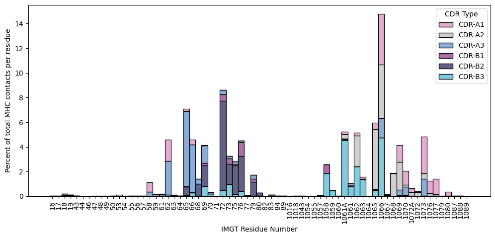
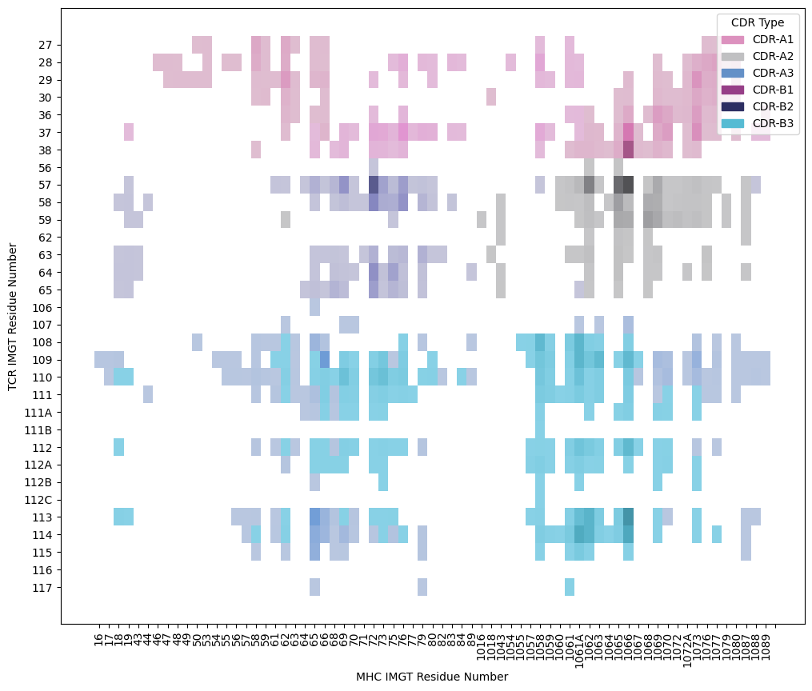
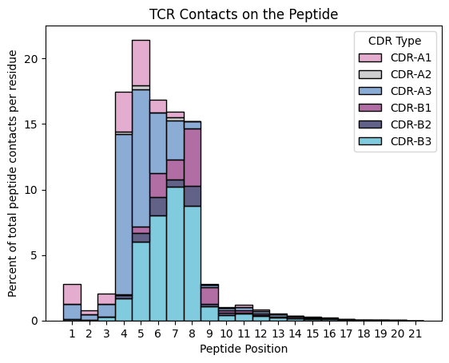
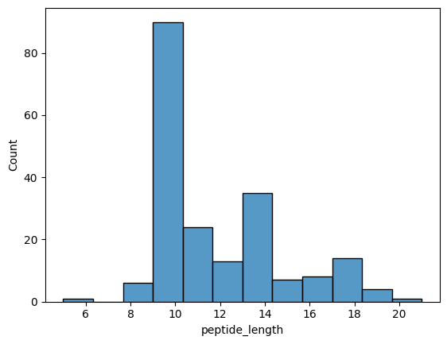
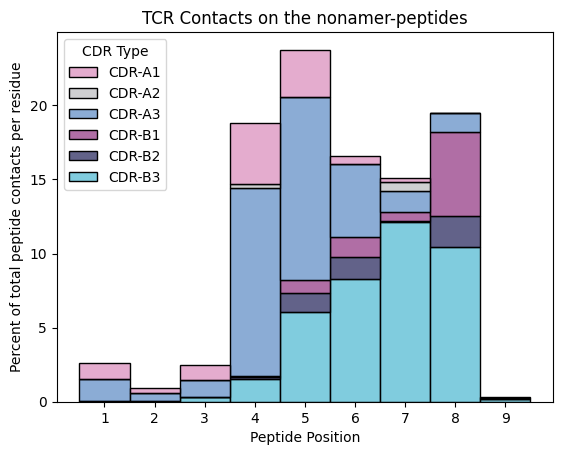
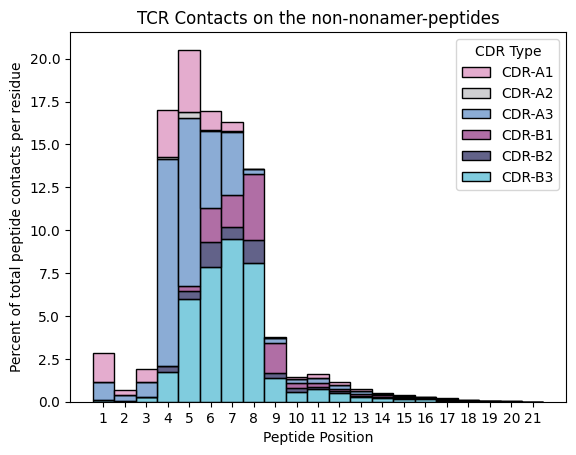

Identify contact residues on MHC Class I molecules
Introduction
In this notebook, we aim to determine the IMGT positions of MHC molecules that make contact with the CDR loops of a contacting TCR. These contacts are then plotted based on the identity of the TCR loop to create a finger print of the TCRs on MHC molecules. We also look at the contacts made by TCRs on the presented peptide.
[1]:
import os
import matplotlib.pyplot as plt
import numpy as np
import pandas as pd
import seaborn as sns
from python_pdb.parsers import parse_pdb_to_pandas
from tcr_pmhc_interface_analysis.imgt_numbering import assign_cdr_number
[2]:
CUTOFF_DISTANCE = 5 # Å
Loading TCR:pMHC-I Structures
[3]:
STCRDAB_PATH = '../data/raw/stcrdab'
[4]:
stcrdab_summary = pd.read_csv(os.path.join(STCRDAB_PATH, 'db_summary.dat'), delimiter='\t')
selected_stcrdab = stcrdab_summary.copy()
# Resolution better than 3.50 Å
selected_stcrdab['resolution'] = pd.to_numeric(selected_stcrdab['resolution'], errors='coerce')
selected_stcrdab = selected_stcrdab.query("resolution <= 3.50")
# alpha-beta TCRs
selected_stcrdab = selected_stcrdab.query("TCRtype == 'abTCR'")
# MHC class I
selected_stcrdab = selected_stcrdab.query("mhc_type == 'MH1'")
# peptide antigen
selected_stcrdab = selected_stcrdab.query("antigen_type == 'peptide'")
# General clean: drop columns that don't contain anything useful
selected_stcrdab = selected_stcrdab.loc[:, selected_stcrdab.nunique() > 1]
selected_stcrdab = selected_stcrdab.dropna(axis=1, how='all')
# Reset Index
selected_stcrdab = selected_stcrdab.reset_index(drop=True)
selected_stcrdab
[4]:
| pdb | Bchain | Achain | antigen_chain | antigen_name | mhc_chain1 | mhc_chain2 | docking_angle | beta_subgroup | alpha_subgroup | ... | alpha_organism | antigen_organism | mhc_chain1_organism | mhc_chain2_organism | authors | resolution | method | r_free | r_factor | engineered | |
|---|---|---|---|---|---|---|---|---|---|---|---|---|---|---|---|---|---|---|---|---|---|
| 0 | 8gom | E | D | C | spike protein s2 | A | B | 39.649 | NaN | NaN | ... | homo sapiens | severe acute respiratory syndrome coronavirus2 | homo sapiens | homo sapiens | Wu, D., Mariuzza, R.A. | 2.783 | X-RAY DIFFRACTION | 0.248 | 0.195 | True |
| 1 | 8gon | E | D | C | spike protein s2 | A | B | 38.984 | NaN | NaN | ... | homo sapiens | severe acute respiratory syndrome coronavirus2 | homo sapiens | homo sapiens | Wu, D., Mariuzza, R.A. | 2.601 | X-RAY DIFFRACTION | 0.253 | 0.198 | True |
| 2 | 7q99 | E | D | C | asn-leu-ser-ala-leu-gly-ile-phe-ser-thr | A | B | 46.371 | TRBV30 | TRAV12 | ... | homo sapiens | homo sapiens | homo sapiens | homo sapiens | Rizkallah, P.J., Sewell, A.K., Wall, A., Fulle... | 2.550 | X-RAY DIFFRACTION | 0.272 | 0.218 | True |
| 3 | 7q9a | E | D | C | leu-leu-leu-gly-ile-gly-ile-leu-val-leu | A | B | 48.391 | TRBV30 | TRAV12 | ... | homo sapiens | homo sapiens | homo sapiens | homo sapiens | Rizkallah, P.J., Sewell, A.K., Wall, A., Fulle... | 2.100 | X-RAY DIFFRACTION | 0.243 | 0.205 | True |
| 4 | 2ak4 | E | D | C | ebv peptide lpeplpqgqltay | A | B | 71.108 | TRBV6 | TRAV19 | ... | homo sapiens | NaN | homo sapiens | homo sapiens | Tynan, F.E., Burrows, S.R., Buckle, A.M., Clem... | 2.500 | X-RAY DIFFRACTION | 0.278 | 0.246 | True |
| ... | ... | ... | ... | ... | ... | ... | ... | ... | ... | ... | ... | ... | ... | ... | ... | ... | ... | ... | ... | ... | ... |
| 297 | 6q3s | E | D | C | ser-leu-leu-met-trp-ile-thr-gln-val | A | B | 67.059 | TRBV6 | TRAV21 | ... | homo sapiens | homo sapiens | homo sapiens | homo sapiens | Meijers, R., Anjanappa, R., Springer, S., Garc... | 2.500 | X-RAY DIFFRACTION | 0.273 | 0.229 | True |
| 298 | 5men | E | D | C | ile-leu-ala-lys-phe-leu-his-trp-leu | A | B | 40.823 | TRBV6 | TRAV22 | ... | homo sapiens | homo sapiens | homo sapiens | homo sapiens | Rizkallah, P.J., Lloyd, A., Crowther, M., Cole... | 2.810 | X-RAY DIFFRACTION | 0.272 | 0.189 | True |
| 299 | 1ao7 | E | D | C | tax peptide | A | B | 34.827 | TRBV6 | TRAV12 | ... | homo sapiens | human t-lymphotropic virus 1 | homo sapiens | homo sapiens | Garboczi, D.N., Ghosh, P., Utz, U., Fan, Q.R.,... | 2.600 | X-RAY DIFFRACTION | 0.320 | 0.245 | True |
| 300 | 4jff | E | D | C | melanoma motif | A | B | 42.977 | TRBV30 | TRAV12 | ... | homo sapiens | homo sapiens | homo sapiens | homo sapiens | Rizkallah, P.J., Cole, D.K., Madura, F., Sewel... | 2.430 | X-RAY DIFFRACTION | 0.263 | 0.210 | True |
| 301 | 3dxa | O | N | M | ebv decapeptide epitope | K | L | 58.225 | TRBV7 | TRAV26 | ... | homo sapiens | NaN | homo sapiens | homo sapiens | Archbold, J.K., Macdonald, W.A., Gras, S., Ros... | 3.500 | X-RAY DIFFRACTION | 0.330 | 0.286 | True |
302 rows × 24 columns
Determine contacting residues
[5]:
contacts = []
for _, row in selected_stcrdab.iterrows():
path = os.path.join(STCRDAB_PATH, 'imgt', f'{row.pdb}.pdb')
with open(path, 'r') as fh:
df = parse_pdb_to_pandas(fh.read())
chain_annotations = {}
chain_annotations[row.Achain] = 'alpha_chain'
chain_annotations[row.Bchain] = 'beta_chain'
chain_annotations[row.antigen_chain] = 'antigen_chain'
chain_annotations[row.mhc_chain1] = 'mhc_chain'
df['chain_type'] = df['chain_id'].map(lambda id_: chain_annotations[id_] if id_ in chain_annotations else None)
df['cdr'] = df['residue_seq_id'].map(assign_cdr_number)
mhc_df = df.query("chain_type == 'mhc_chain' and residue_seq_id < 1090")
peptide_df = df.query("chain_type == 'antigen_chain'").copy()
tcr_cdrs_df = df.query("(chain_type == 'alpha_chain' or chain_type == 'beta_chain') and cdr.notnull()")
peptide_df_per_res = peptide_df.groupby(['residue_seq_id', 'residue_insert_code', 'residue_name'], dropna=False)
group_mapping = {group: idx for idx, group in enumerate(peptide_df_per_res.groups.keys(), 1)}
peptide_df['peptide_length'] = max(group_mapping.values())
peptide_df['peptide_position'] = peptide_df[['residue_seq_id',
'residue_insert_code',
'residue_name']].apply(tuple, axis='columns').map(group_mapping)
tcr_mhc_interface = tcr_cdrs_df.merge(mhc_df, how='cross', suffixes=('_tcr', '_mhc'))
tcr_mhc_interface['distance'] = np.sqrt(np.square(tcr_mhc_interface['pos_x_tcr']
- tcr_mhc_interface['pos_x_mhc'])
+ np.square(tcr_mhc_interface['pos_y_tcr']
- tcr_mhc_interface['pos_y_mhc'])
+ np.square(tcr_mhc_interface['pos_z_tcr']
- tcr_mhc_interface['pos_z_mhc']))
tcr_peptide_interface = tcr_cdrs_df.merge(peptide_df, how='cross', suffixes=('_tcr', '_peptide'))
tcr_peptide_interface['distance'] = np.sqrt(np.square(tcr_peptide_interface['pos_x_tcr']
- tcr_peptide_interface['pos_x_peptide'])
+ np.square(tcr_peptide_interface['pos_y_tcr']
- tcr_peptide_interface['pos_y_peptide'])
+ np.square(tcr_peptide_interface['pos_z_tcr']
- tcr_peptide_interface['pos_z_peptide']))
contacts_tcr_mhc = tcr_mhc_interface.query('distance < @CUTOFF_DISTANCE').copy()
contacts_tcr_mhc['path'] = path
contacts_tcr_mhc['interface_type'] = 'tcr_mhc'
contacts.append(contacts_tcr_mhc)
contacts_tcr_peptide = tcr_peptide_interface.query('distance < @CUTOFF_DISTANCE').copy()
contacts_tcr_peptide['path'] = path
contacts_tcr_peptide['interface_type'] = 'tcr_peptide'
contacts.append(contacts_tcr_peptide)
contacts = pd.concat(contacts)
contacts
[5]:
| record_type_tcr | atom_number_tcr | atom_name_tcr | alt_loc_tcr | residue_name_tcr | chain_id_tcr | residue_seq_id_tcr | residue_insert_code_tcr | pos_x_tcr | pos_y_tcr | ... | pos_y_peptide | pos_z_peptide | occupancy_peptide | b_factor_peptide | element_peptide | charge_peptide | chain_type_peptide | cdr_peptide | peptide_length | peptide_position | |
|---|---|---|---|---|---|---|---|---|---|---|---|---|---|---|---|---|---|---|---|---|---|
| 69473 | ATOM | 472 | C | None | ASN | E | 57 | None | 12.312 | -60.161 | ... | NaN | NaN | NaN | NaN | NaN | NaN | NaN | NaN | NaN | NaN |
| 69474 | ATOM | 472 | C | None | ASN | E | 57 | None | 12.312 | -60.161 | ... | NaN | NaN | NaN | NaN | NaN | NaN | NaN | NaN | NaN | NaN |
| 70937 | ATOM | 473 | O | None | ASN | E | 57 | None | 11.507 | -60.966 | ... | NaN | NaN | NaN | NaN | NaN | NaN | NaN | NaN | NaN | NaN |
| 70938 | ATOM | 473 | O | None | ASN | E | 57 | None | 11.507 | -60.966 | ... | NaN | NaN | NaN | NaN | NaN | NaN | NaN | NaN | NaN | NaN |
| 70939 | ATOM | 473 | O | None | ASN | E | 57 | None | 11.507 | -60.966 | ... | NaN | NaN | NaN | NaN | NaN | NaN | NaN | NaN | NaN | NaN |
| ... | ... | ... | ... | ... | ... | ... | ... | ... | ... | ... | ... | ... | ... | ... | ... | ... | ... | ... | ... | ... | ... |
| 31515 | ATOM | 10078 | CD2 | None | TYR | N | 113 | None | -51.375 | 74.966 | ... | 73.846 | -3.678 | 1.0 | 63.86 | O | None | antigen_chain | NaN | 10.0 | 4.0 |
| 31516 | ATOM | 10078 | CD2 | None | TYR | N | 113 | None | -51.375 | 74.966 | ... | 75.095 | -6.148 | 1.0 | 63.91 | C | None | antigen_chain | NaN | 10.0 | 4.0 |
| 31517 | ATOM | 10078 | CD2 | None | TYR | N | 113 | None | -51.375 | 74.966 | ... | 76.511 | -6.671 | 1.0 | 63.85 | C | None | antigen_chain | NaN | 10.0 | 4.0 |
| 31697 | ATOM | 10080 | CE2 | None | TYR | N | 113 | None | -52.313 | 73.948 | ... | 73.846 | -3.678 | 1.0 | 63.86 | O | None | antigen_chain | NaN | 10.0 | 4.0 |
| 31698 | ATOM | 10080 | CE2 | None | TYR | N | 113 | None | -52.313 | 73.948 | ... | 75.095 | -6.148 | 1.0 | 63.91 | C | None | antigen_chain | NaN | 10.0 | 4.0 |
156312 rows × 56 columns
[6]:
contacts['pdb_id'] = contacts['path'].map(lambda path: path.split('/')[-1].split('.')[0])
[7]:
def create_resi(seq_id: float, insert_code: str | float) -> str | None:
if pd.isnull(seq_id):
return None
return str(int(seq_id)) + (insert_code if not pd.isnull(insert_code) else '')
contacts['resi_mhc'] = contacts.apply(lambda row: create_resi(row.residue_seq_id_mhc, row.residue_insert_code_mhc),
axis='columns')
contacts['resi_tcr'] = contacts.apply(lambda row: create_resi(row.residue_seq_id_tcr, row.residue_insert_code_tcr),
axis='columns')
[8]:
contacts.loc[contacts['peptide_position'].notnull(),
'peptide_position'] = contacts.loc[contacts['peptide_position'].notnull(),
'peptide_position'].apply(int).apply(str)
[9]:
contacts['cdr_name'] = contacts.apply(
lambda row: f"CDR-{'A' if row.chain_type_tcr == 'alpha_chain' else 'B'}{int(row.cdr_tcr)}",
axis='columns',
)
[10]:
contacts['cdr_name'] = pd.Categorical(contacts['cdr_name'],
['CDR-A1', 'CDR-A2', 'CDR-A3', 'CDR-B1', 'CDR-B2', 'CDR-B3'])
Visualising contact maps
[11]:
palette = sns.color_palette(['#' + colour.lower()
for colour in ['DC91BE','C0C0C2', '6490C7', '963E87','2D2E62','56BBD3']], 6)
TCR Contacts on MHC Molecules
[12]:
plt.figure(figsize=(12, 5))
ax = sns.histplot(contacts.query("interface_type == 'tcr_mhc'").sort_values('residue_seq_id_mhc'),
x='resi_mhc',
hue='cdr_name',
multiple='stack',
stat='percent',
palette=palette)
ax.legend_.set_title(title='CDR Type')
ax.set_xlabel('IMGT Residue Number')
ax.set_ylabel('Percent of total MHC contacts per residue')
plt.xticks(rotation=90)
plt.show()

[13]:
mhc_labels = contacts[
['residue_seq_id_mhc', 'residue_insert_code_mhc', 'resi_mhc']
].fillna('').sort_values(['residue_seq_id_mhc', 'residue_insert_code_mhc'])['resi_mhc'].unique().tolist()
tcr_labels = contacts[
['residue_seq_id_tcr', 'residue_insert_code_tcr', 'resi_tcr']
].fillna('').sort_values(['residue_seq_id_tcr', 'residue_insert_code_tcr'])['resi_tcr'].unique().tolist()
contacts['resi_mhc'] = pd.Categorical(contacts['resi_mhc'], mhc_labels)
contacts['resi_tcr'] = pd.Categorical(contacts['resi_tcr'], tcr_labels)
[14]:
plt.figure(figsize=(12, 10))
ax = sns.histplot(contacts.query("interface_type == 'tcr_mhc'"),
x='resi_mhc', y='resi_tcr',
hue='cdr_name',
palette=sns.color_palette(palette, 6))
ax.legend_.set_title(title='CDR Type')
ax.set_xlabel('MHC IMGT Residue Number')
ax.set_ylabel('TCR IMGT Residue Number')
plt.xticks(rotation=90)
plt.show()

TCR Contacts on Peptides
[15]:
ax = sns.histplot(contacts.query("interface_type == 'tcr_peptide'").sort_values('residue_seq_id_peptide'),
x='peptide_position',
hue='cdr_name',
multiple='stack',
stat='percent',
palette=sns.color_palette(palette, 6))
ax.set_title('TCR Contacts on the Peptide')
ax.set_xlabel('Peptide Position')
ax.set_ylabel('Percent of total peptide contacts per residue')
ax.legend_.set_title(title='CDR Type')
plt.show()

[16]:
sns.histplot(contacts.query("interface_type == 'tcr_peptide'").drop_duplicates('path'), x='peptide_length')
[16]:
<AxesSubplot: xlabel='peptide_length', ylabel='Count'>

The mode of peptide lengths in 9-mers!
[17]:
ax = sns.histplot(contacts.query("interface_type == 'tcr_peptide' and peptide_length == 9.0").sort_values('residue_seq_id_peptide'),
x='peptide_position',
hue='cdr_name',
multiple='stack',
stat='percent',
palette=sns.color_palette(palette, 6))
ax.set_title('TCR Contacts on the nonamer-peptides')
ax.set_xlabel('Peptide Position')
ax.set_ylabel('Percent of total peptide contacts per residue')
ax.legend_.set_title(title='CDR Type')
plt.show()

For the nonamers, which is the dominant contacting loop at each peptide position?
[18]:
def select_dominant(group: pd.DataFrame) -> str:
return group.sort_values('count', ascending=False).iloc[0]['cdr_name']
nonanmer_peptide_tcr_contact_counts = (contacts.query("interface_type == 'tcr_peptide' and peptide_length == 9.0")
.value_counts(['peptide_position', 'cdr_name']))
nonanmer_peptide_tcr_contact_counts.name = 'count'
nonanmer_peptide_tcr_contact_counts = nonanmer_peptide_tcr_contact_counts.reset_index()
nonanmer_peptide_tcr_contact_counts.groupby('peptide_position').apply(select_dominant)
[18]:
peptide_position
1 CDR-A3
2 CDR-A3
3 CDR-A3
4 CDR-A3
5 CDR-A3
6 CDR-B3
7 CDR-B3
8 CDR-B3
9 CDR-B3
dtype: object
Do the non-nonamers have the same trend?
[19]:
ax = sns.histplot(contacts.query("interface_type == 'tcr_peptide' and peptide_length != 9.0").sort_values('residue_seq_id_peptide'),
x='peptide_position',
hue='cdr_name',
multiple='stack',
stat='percent',
palette=sns.color_palette(palette, 6))
ax.set_title('TCR Contacts on the non-nonamer-peptides')
ax.set_xlabel('Peptide Position')
ax.set_ylabel('Percent of total peptide contacts per residue')
ax.legend_.set_title(title='CDR Type')
plt.show()

Yes, it seems that they do.
Exporting residue list
[20]:
contact_positions = contacts.value_counts(['cdr_name', 'resi_mhc'])
contact_positions.name = 'count'
contact_positions = contact_positions.to_frame().reset_index().sort_values('resi_mhc')
contact_positions.to_csv('../data/processed/mhc_contacts.csv', index=False)